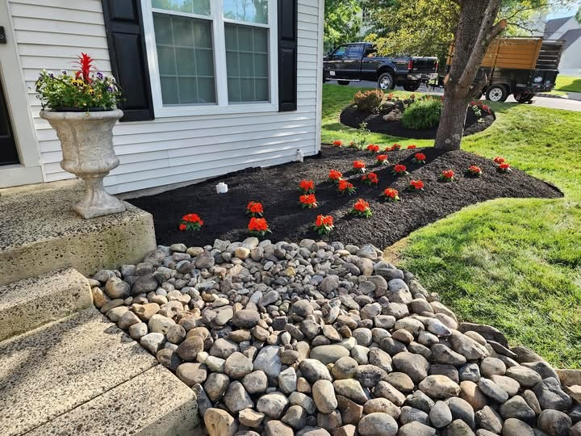

Landscaping
Landscape care and outdoor improvements designed to create a cleaner appearance and stronger curb appeal.
C&G Services provides dependable landscaping, lawn care, mulching, and seasonal property cleanup in Doylestown, Quakertown, and nearby Pennsylvania communities.
C&G Services helps homeowners and businesses improve curb appeal and keep outdoor areas looking clean, healthy, and well maintained. Every project begins with the needs of the property and a clear estimate.
Whether your yard needs ongoing lawn care, fresh mulch, seasonal cleanup, or a landscaping refresh, our family-owned team provides attentive service and a professional finish.

Landscape care and outdoor improvements designed to create a cleaner appearance and stronger curb appeal.
Consistent mowing, trimming, and edging for a neat, professionally maintained lawn.
Fresh mulch installation and clean bed lines that give planting areas a finished look.
Core aeration that supports healthier soil, stronger roots, and a fuller lawn.
Spring cleanup and fall leaf removal for lawns, planting beds, walkways, and outdoor areas.
Winter service for driveways, walkways, and outdoor areas when snow arrives.
We serve properties throughout Bucks County and nearby areas of Montgomery and Lehigh counties. Contact us to confirm service availability for your property.
Focused on communities in and around Bucks County.
Clean edges, neat work areas, and a polished finish.
Discuss the property and requested work before service begins.
Lawn care, cleanups, landscaping, and winter services.
Tell C&G Services what your property needs. We will follow up to discuss the work and service availability in your area.